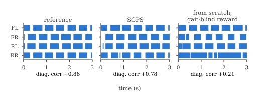
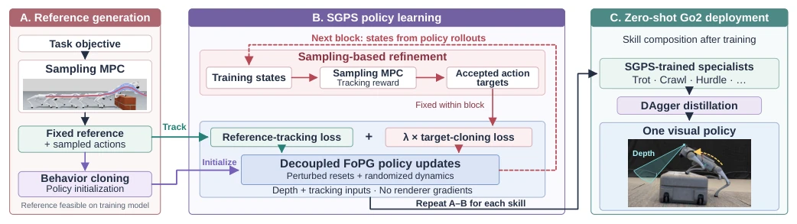
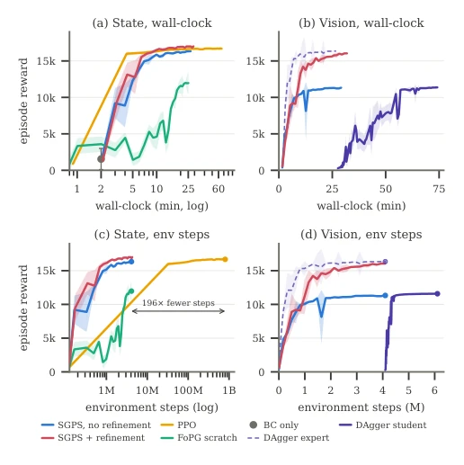
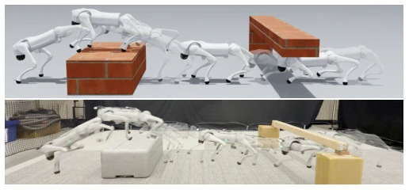
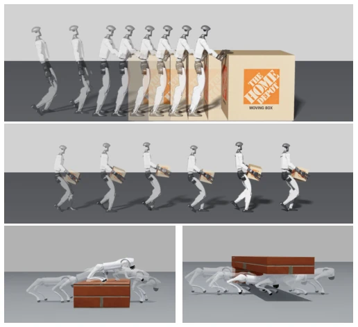
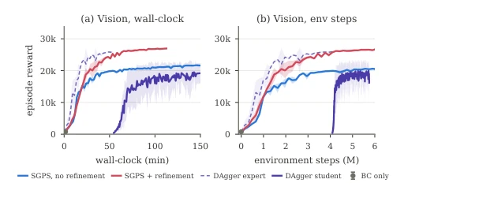

This paper brings a "mixed doubles" to visual policy learning, with sampling MPC responsible for guidance, and FoPG responsible for execution. Although claimed to accelerate, the essence still relies on MPC generating high-quality trajectories to feed the policy, somewhat like an "open-book exam", weakening the policy's own learning capability. Fortunately, it indeed saves VRAM, avoids rendering gradients, and can be deployed directly on real hardware, which is very friendly for engineering implementation. However, relying on a differentiable simulator might be a bit shaky in complex physical interactions; after all, if the trajectories generated by MPC themselves have deviations, one cannot blame the policy for learning incorrectly. Zero-shot transfer to Go2 is indeed quite impressive, but the box pushing on G1 still simplified physical contact, not involving complex grasping. Moreover, it does not require a complex teacher-student architecture, learning depth directly, this point is more convenient than DAgger. Overall, it is a practical engineering optimization scheme, slightly inferior in theoretical depth, but wins in being runnable.
Visual policy learning requires coordinating contact in locomotion and manipulation, incurring massive computational and memory costs. Although FoPG reduces training costs via differentiable simulation [14], local optimization tends to converge to unintended contact modes, such as erratic running or invalid contact [4]. Existing methods like D.Va [10] decouple rendering but still require state policy teachers [2] or rely on low sample-efficiency methods like PPO [7]. Sampling MPC can provide feasible trajectories [20], but online deployment is challenging and requires state estimation. Particularly for visual inputs, traditional methods often require privileged states for assistance, increasing system complexity. This paper aims to combine MPC's reference capability with FoPG's efficiency, training visual policies directly without teacher networks and achieving hardware zero-shot deployment, addressing high training costs and susceptibility to local optima.

Fig. 4. Go2 foot-contact patterns. Left: sampling MPC reference. Center: SGPS. Right: FoPG trained from scratch without joint-angle tracking. Blue intervals indicate ground contact for the front-left (FL), front-right (FR), rear- left (RL), and rear-right (RR) feet. Values report mean diagonal-pair contact correlation (FL–RR and FR–RL).
The SGPS framework consists of three steps. First, reference trajectories are generated using sampling MPC, and the policy is initialized via behavior cloning. The core training phase alternates: 1) Sampling MPC fine-tunes action targets based on the current state to generate new trajectory segments; 2) Decoupled FoPG updates the policy while minimizing both tracking loss and cloning acceptance target loss. During visual learning, rendering is excluded from the computation graph, utilizing depth observations directly to avoid gradient computation bottlenecks. Finally, multiple skill experts are distilled into a single policy via DAgger, supporting autonomous behavior switching. The MPC component utilizes spline nodes and annealing sampling [20], while the FoPG component employs short horizon windows [14]. This design enables the policy to follow references while exploring and refining action targets through sampling. In the training block, MPC search is conducted around the nominal plan generated by the current policy, with acceptance criteria based on tracking reward, ensuring generated targets are feasible.

Fig. 2. SGPS learning and deployment. (A) Sampling MPC supplies a fixed tracking reference and actions for behavior-cloning initialization. (B) Each block starts with sampling-based refinement, followed by decoupled FoPG updates combining tracking and cloning of accepted targets. (C) Distillation yields one Go2 policy with autonomous visual behavior transitions, onboard sensing, and velocity-only user input, without reference inputs or online MPC.
Experiments were conducted on Unitree Go2 and G1 for trotting, obstacle traversal, pushing, and carrying. Baselines include PPO [7], FoPG scratch, BC, and DAgger. SGPS outperforms PPO on both state and visual policies, reducing environment interaction steps by 196 times [3]. Ablation studies show refinement significantly improves visual policies. Go2 hardware zero-shot deployment was successful, with autonomous switching between crawl/trot/hurdle [6]. In the G1 box-pushing task, SGPS approaches state expert levels [5], proving the method is effective and efficient. Hardware implementation uses Jetson Orin, requiring no external positioning, relying solely on depth cameras and IMU. Training was performed on a single RTX 4080 GPU, taking approximately 2000 epochs, demonstrating extremely high sample efficiency.

Fig. 3. Trot learning efficiency and refinement ablation. Episode return versus training time (top) and environment interactions (bottom), for state (left) and visual (right) policies. Red includes recurring search and target cloning; blue retains BC initialization and FoPG tracking without refinement. SGPS shading shows ±1 standard deviation across seeds.

Fig. 6. Autonomous visual Go2 deployment of crawl, trot, and hurdle. Simulation (top) and hardware (bottom) poses show crawling beneath a beam, trotting toward a box, then climbing, traversing, and landing, from right to left on analogous courses. Translucent poses show intermediate motion. The policy transfers zero-shot, with autonomous visual transitions and a velocity command as the only user input.
其他图片Other Figures

Fig. 1. SGPS policies across embodiments. Overlaid poses from simulation rollouts. Top: a qualitative G1 demonstration composes a trot approach segment with six crate-push bouts to move an 18 kg crate 1.4 m. Middle: a Unitree G1 humanoid jogs while carrying a 4 kg box with both hands. Bottom left: a Unitree Go2 clears a hurdle. Bottom right: the Go2 lowers its body to crawl under a guard rail.

Fig. 5. G1 visual carrying and refinement ablation. Episode return versus training time (a) and environment interactions (b). Red includes recurring refinement; blue retains initialization and FoPG tracking without it. SGPS shading shows ±1 standard deviation across seeds.